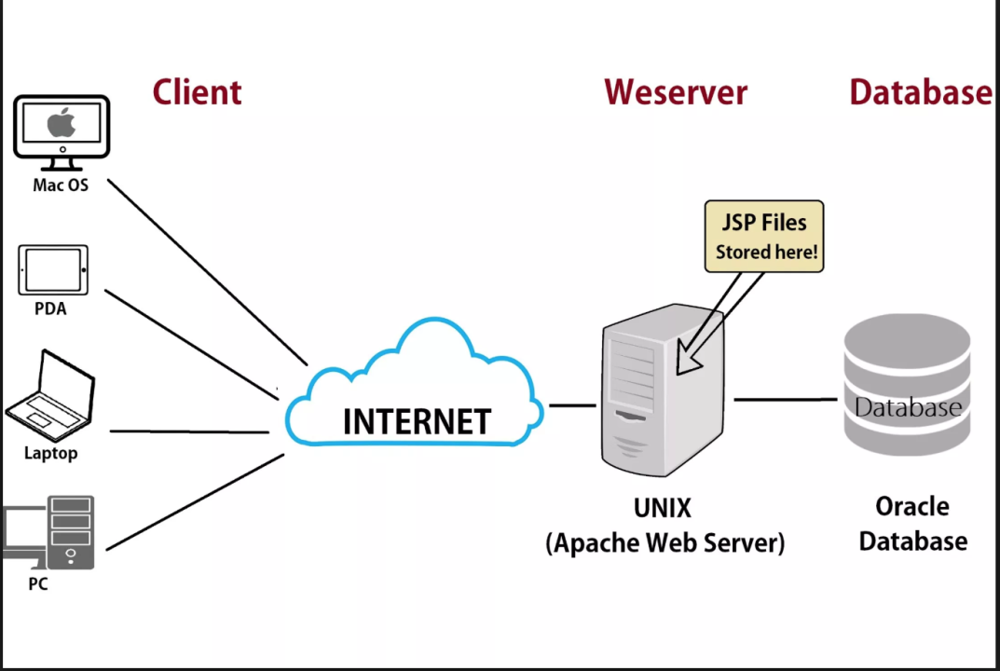

-
What is a web server? (In the context of software Ex. Apache)
A web server is a program designed to store, process, and deliver website content (HTML, CSS, images, videos) to users' browsers via the internet. It functions as the "middleman" between the client (browser) and the server's file system, using the Hypertext Transfer Protocol (HTTP/HTTPS) to handle requests and send back responses.

-
What are some different web server applications? Include definitions, project’s website/where to download it, which operating system is available for and its latest version.
Here are the most prominent web server applications available in 2026:
Apache HTTP Server
The "Industry Standard." Apache is the most flexible web server, known for its modular system that allows you to turn features on or off as needed.
- Website: Apache
- Best for: Shared hosting environments and complex configurations where flexibility is key.
- Operating Systems: Linux, Windows, macOS, Unix.
- Latest Version: 2.4.66 (as of early 2026).
- Download: apache
Nginx (Engine-X)
The "Performance Powerhouse." Nginx was designed to solve the "C10k problem" (handling 10,000 concurrent connections). It is often used as a Reverse Proxy or Load Balancer in front of other servers.
- Best for: High-traffic websites, streaming services, and serving static content quickly.
- Operating Systems: Linux, Windows, macOS, Unix.
- Latest Version: 1.28.2 (Stable) / 1.29.5 (Mainline).
- Download: nginx
Caddy
The "Modern Choice." Caddy is written in Go and is famous for being the first web server to offer automatic HTTPS by default using Let's Encrypt. It is incredibly easy to configure with a single "Caddyfile."
- Best for: Developers who want a "set it and forget it" setup with modern security defaults.
- Operating Systems: Linux, Windows, macOS, Android, BSD.
- Latest Version: 2.11.2 (as of March 2026).
- Download: caddy
The "Enterprise Option." IIS is deeply integrated with the Windows ecosystem. It is the go-to choice for hosting ASP.NET applications and integrates seamlessly with Active Directory.
- Best for: Corporate environments running Windows Server and .NET applications.
- Operating Systems: Windows only.
- Latest Version: 10.0 (Updated continuously via Windows Server updates).
- Download: Included as a "Feature" in Windows; manage via iis.net.Microsoft IIS
LiteSpeed Web Server
The "Speed King." LiteSpeed is a proprietary (paid) server that is a drop-in replacement for Apache. It reads Apache’s configuration files but performs significantly faster, especially for WordPress sites.
- Best for: High-performance web hosting and WordPress optimization.
- Operating Systems: Linux, CloudLinux, FreeBSD.
- Latest Version: 6.3.4 (as of early 2026).
- Download: LiteSpeed
server primary strength License Best for
|---|---|---|---|---|---|
-
What is virtualization?
-
What is virtualbox?
-
What is a virtual machine?
-
In the context of virtualization, what does host machine and guest machine mean?
-
What is Debian?
-
What is a firewall?
-
What is SSH?
-
What is an IP Address?
-
What is a network mask?
-
What is a port? (in the context of networking/computers)
-
What is port forwarding?
-
What is localhost? (in the context of networking/computers)
-
What does this ip address represent 127.0.0.1?
-
What is Git?
-
What is GitHub?